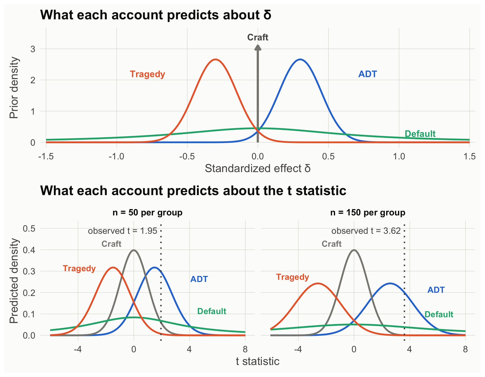
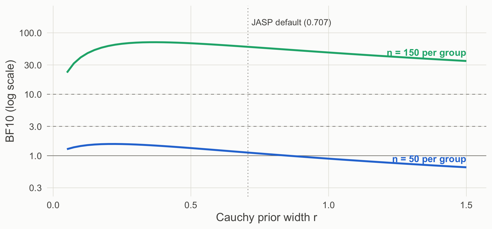

Load the Study 1 data
s1_50 <- read.csv("data/story_n50.csv")
s1_150 <- read.csv("data/story_n150.csv")
s50 <- two_group(s1_50)
s150 <- two_group(s1_150)A Bayes factor is a prediction contest
So far ADT has made one directional prediction: more enjoyment after the rewarded ending. Theory building usually means weighing rival explanations of the same result, so here are two rivals. To compare the three, each account now states how big δ should be. All three are stylized (simplified for this demo, not summaries of a literature):
| Account | Mechanism | Prediction for δ |
|---|---|---|
| ADT | Viewers like the character who did good, so they enjoy seeing that character rewarded more than punished. | small and positive (around 0.3) |
| Craft | Enjoyment comes from how well the story is told, not from how it ends. | zero |
| Tragedy | Watching a good person suffer is moving, and moving stories are enjoyed more. | small and negative (around −0.3) |
Each account above makes a prediction about δ. Using the n = 50 data (observed d = 0.39), which account wins, and by roughly how much?
A theory that predicts “δ is around 0.3” can be written as a prior on δ. That prior implies which t statistics the study should produce. The Bayes factor is the ratio of how well two hypotheses predicted the t value we actually observed (Rouder et al., 2009; Gronau et al., 2020). Treating priors as part of the theory is the core of Vanpaemel’s (2010) defense of Bayes factors for theory testing.
s1_50 <- read.csv("data/story_n50.csv")
s1_150 <- read.csv("data/story_n150.csv")
s50 <- two_group(s1_50)
s150 <- two_group(s1_150)hyps <- list(
"Craft (δ = 0)" = "null",
"ADT: Normal(0.3, 0.15)" = prior_adt,
"Tragedy: Normal(−0.3, 0.15)" = prior_tragedy,
"JASP default: Cauchy(0, 0.707)" = prior_default
)cols <- c("Craft (δ = 0)" = pal[["gray"]],
"ADT: Normal(0.3, 0.15)" = pal[["blue"]],
"Tragedy: Normal(−0.3, 0.15)" = pal[["orange"]],
"JASP default: Cauchy(0, 0.707)" = pal[["aqua"]])
short <- c("Craft", "ADT", "Tragedy", "Default")
dl <- seq(-1.5, 1.5, by = 0.01)
pri <- do.call(rbind, lapply(names(hyps)[-1], function(h) data.frame(x = dl, y = hyps[[h]](dl), h = h)))
pri_lab <- data.frame(x = c(0.78, -0.78, 1.15), y = c(2.2, 2.2, 0.28), h = names(hyps)[-1],
lab = short[-1])
pA <- ggplot(pri, aes(x, y, color = h)) +
geom_segment(aes(x = 0, xend = 0, y = 0, yend = 3.1), color = pal[["gray"]], linewidth = 1.3,
arrow = arrow(length = unit(0.25, "cm")), inherit.aes = FALSE) +
annotate("text", x = 0, y = 3.38, label = "Craft", hjust = 0.5, size = 4.3,
color = pal[["ink2"]], fontface = "bold") +
geom_line(linewidth = 1.1) +
geom_text(data = pri_lab, aes(label = lab), size = 4.3, fontface = "bold") +
scale_color_manual(values = cols) +
coord_cartesian(ylim = c(0, 3.5), xlim = c(-1.4, 1.4)) +
labs(x = "Standardized effect δ", y = "Prior density", title = "What each account predicts about δ") +
theme_demo()
tg <- seq(-6, 8, by = 0.05)
pred <- do.call(rbind, lapply(list(list(s50, "n = 50 per group"), list(s150, "n = 150 per group")), function(z) {
do.call(rbind, lapply(names(hyps), function(h) data.frame(t = tg, y = pred_t(tg, z[[1]], hyps[[h]]), h = h, n = z[[2]])))
}))
pred$n <- factor(pred$n, levels = c("n = 50 per group", "n = 150 per group"))
obs <- data.frame(n = factor(c("n = 50 per group", "n = 150 per group"), levels = levels(pred$n)),
t = c(s50$t, s150$t))
pk <- data.frame(
n = factor(rep(levels(pred$n), each = 4), levels = levels(pred$n)),
h = rep(names(hyps), 2), lab = rep(short, 2),
t = c(-1.6, 4.7, -3.9, 5.6, -1.6, 5.9, -4.4, 6.1),
y = c(0.415, 0.25, 0.3, 0.1, 0.415, 0.2, 0.26, 0.085))
pB <- ggplot(pred, aes(t, y, color = h)) +
geom_line(linewidth = 1.1) +
geom_vline(data = obs, aes(xintercept = t), linewidth = 0.9, linetype = "dotted", color = pal[["ink2"]]) +
geom_text(data = obs, aes(x = t, y = 0.49, label = sprintf("observed t = %.2f", t)),
hjust = 1.05, size = 4.2, color = pal[["ink2"]], inherit.aes = FALSE) +
geom_text(data = pk, aes(label = lab), size = 4, fontface = "bold", vjust = 0) +
facet_wrap(~n) +
scale_color_manual(values = cols) +
coord_cartesian(ylim = c(0, 0.51)) +
labs(x = "t statistic", y = "Predicted density", title = "What each account predicts about the t statistic") +
theme_demo()
pA / pB
bf_table <- sapply(list(`n = 50` = s50, `n = 150` = s150), function(s)
sapply(hyps[-1], function(pr) bf_vs_null(s, pr)))
rownames(bf_table) <- c("ADT vs. null", "Tragedy vs. null", "Default vs. null")
round(rbind(bf_table,
"ADT vs. tragedy" = bf_table[1, ] / bf_table[2, ],
"ADT vs. default" = bf_table[1, ] / bf_table[3, ]), 2) n = 50 n = 150
ADT vs. null 4.90 307.31
Tragedy vs. null 0.12 0.30
Default vs. null 1.12 59.18
ADT vs. tragedy 40.74 1032.84
ADT vs. default 4.36 5.19# Check our prediction-contest function against BayesFactor (the engine JASP uses)
c(ours = bf_vs_null(s50, prior_default),
BayesFactor = extractBF(bf_default(s1_50))$bf) ours BayesFactor
1.123621 1.123621 Read the table as a contest against the craft account, which predicts δ = 0 (the null):
A precise theory sticks its neck out. When it is right, it earns more evidence than a vague one; when it is wrong, it loses more. Meehl (1967) argued that a theory earns corroboration only by making predictions precise enough to fail; the Bayes factor puts a number on that idea.
This recreates JASP’s robustness check: the default hypothesis with Cauchy widths from 0.05 to 1.5.
r <- seq(0.05, 1.5, by = 0.025)
rob <- rbind(data.frame(r, bf = sapply(r, function(w) bf_vs_null(s50, function(x) dcauchy(x, 0, w))), n = "n = 50 per group"),
data.frame(r, bf = sapply(r, function(w) bf_vs_null(s150, function(x) dcauchy(x, 0, w))), n = "n = 150 per group"))
rl <- do.call(rbind, lapply(split(rob, rob$n), function(z) z[z$r == 1.5, ]))
ggplot(rob, aes(r, bf, color = n)) +
geom_hline(yintercept = c(1, 3, 10), color = pal[["gray"]], linetype = c("solid", "dashed", "dashed"), linewidth = 0.4) +
geom_vline(xintercept = sqrt(2) / 2, color = pal[["gray"]], linetype = "dotted") +
geom_line(linewidth = 1.2) +
geom_text(data = rl, aes(label = n), hjust = 1, vjust = -0.8, size = 4.4, fontface = "bold") +
annotate("text", x = 0.72, y = 150, label = "JASP default (0.707)", hjust = 0, size = 4, color = pal[["ink2"]]) +
scale_y_log10(breaks = c(0.3, 1, 3, 10, 30, 100), limits = c(0.3, 200)) +
scale_color_manual(values = c("n = 50 per group" = pal[["blue"]], "n = 150 per group" = pal[["aqua"]])) +
labs(x = "Cauchy prior width r", y = "BF10 (log scale)") +
theme_demo()
At n = 50 every width gives weak evidence at best, and wide priors tip toward the null. At n = 150 every reasonable width favors an effect. A prior sensitivity analysis is how you show readers which conclusions depend on your theory’s specifics and which do not.
A p value can test any hypothesized value, not only zero (Greenland et al., 2016). Testing each account’s central prediction:
p_delta <- function(s, d0) { # exact test of H0: delta = d0 via the noncentral t
lo <- pt(s$t, s$df, ncp = d0 * sqrt(s$neff)); 2 * min(lo, 1 - lo)
}
sapply(c(`Tragedy (delta = -0.3)` = -0.3, `Craft (delta = 0)` = 0, `ADT (delta = 0.3)` = 0.3),
function(d0) c(`n = 50` = p_delta(s50, d0), `n = 150` = p_delta(s150, d0))) |> round(3) Tragedy (delta = -0.3) Craft (delta = 0) ADT (delta = 0.3)
n = 50 0.001 0.054 0.660
n = 150 0.000 0.000 0.316At n = 50 the data reject the tragedy account’s value but cannot separate zero from 0.3. At n = 150 zero is rejected and 0.3 is not. The frequentist route falsifies values that are incompatible with the data; it does not quantify how much the data support one surviving value over another. For range predictions (“at least 0.2”), use minimum-effect and equivalence tests (Lakens et al., 2018; Scene 3).
Theory-building takeaway. A Bayes factor is only as meaningful as the hypotheses it compares. Default priors test a default theory. To test your theory, write its prediction down as a prior, and report how conclusions change across defensible alternatives.